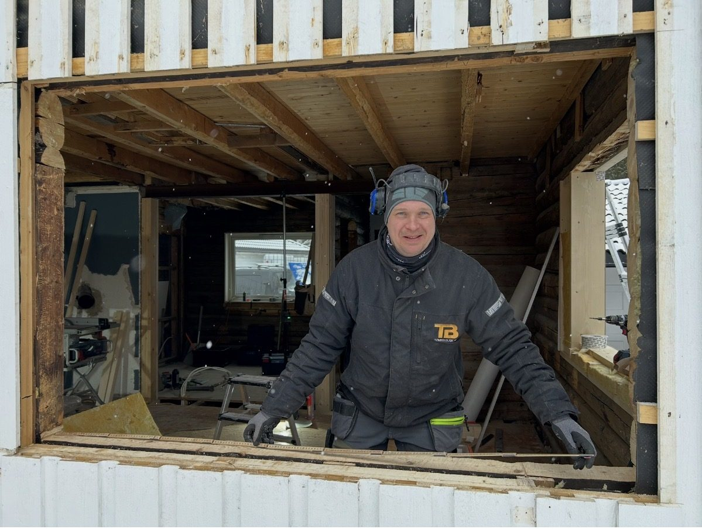
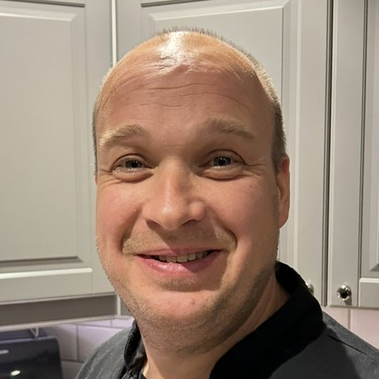

Restaurering av eldre bygg
Istandsetting av gamle hus og hytter med tradisjonelle metoder og materialer. Vinduer, dører, kledning, listverk og bærende konstruksjon.
Vår spesialitet: sveitserhus, laftede bygg, gamle hytter og bindingsverk.
Tømrer og snekker på Nesodden og i Frogn
Tømrer Busk AS er din lokale tømrer og snekker på Nesodden, og tar også oppdrag i Frogn og Drøbak. Vi tar alle typer tømreroppdrag, fra små reparasjoner til større renoveringer, og er spesielt glad i eldre hus og restaurering.

Om oss
Tømrer Busk AS drives av tømrer Vidar Busk og holder til på Svestad på Nesodden. Vi jobber for privatpersoner, borettslag og hytteeiere over hele Nesodden – fra Nesoddtangen og Bjørnemyr til Fjellstrand, Fagerstrand og Hellvik – og i Frogn og Drøbak.
Eldre hus krever et trent øye og tålmodige hender. Vi tar vare på det opprinnelige der det er mulig – gamle vinduer, panel, listverk og konstruksjoner – og bytter ut bare det som må byttes. Målet er at resultatet skal se ut som det alltid har hørt hjemme der.
Vi tar alle typer tømreroppdrag, med unntak av oppføring av hele nye hus.
Tjenester
Istandsetting av gamle hus og hytter med tradisjonelle metoder og materialer. Vinduer, dører, kledning, listverk og bærende konstruksjon.
Vår spesialitet: sveitserhus, laftede bygg, gamle hytter og bindingsverk.
Oppgradering av rom, nye planløsninger, etterisolering og modernisering – tilpasset huset du har.
Mer plass til hverdagen, med tilbygg som passer stilen på resten av huset.
Utskifting og reparasjon av kledning, vindskier, takkonstruksjon og råteskader.
Montering av nye – eller restaurering av gamle – vinduer og dører.
Terrasser, trapper, rekkverk, boder og annet utendørs snekkerarbeid.
Ingen jobb er for liten. Reparasjoner, listing, dører som henger og annet som bør fikses.
Prosjekter

Kort beskrivelse av oppdraget, sted og år.
Kontakt
Ring eller send en e-post, så avtaler vi en uforpliktende befaring.
